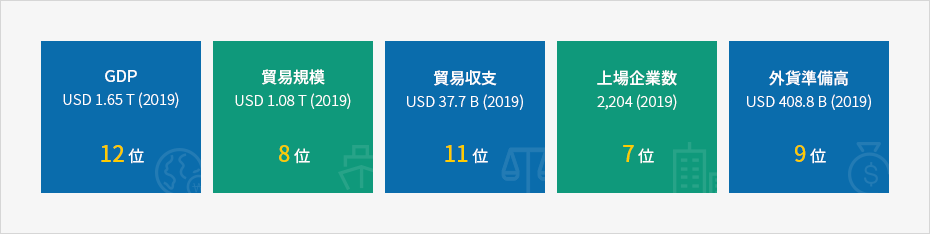
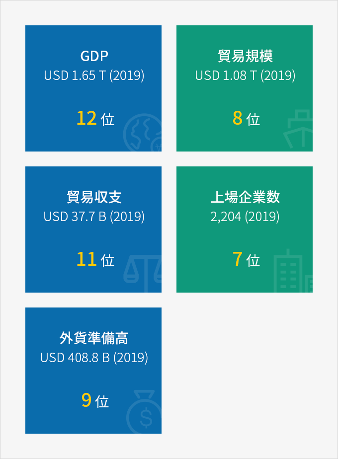

経済
- Home
- Why KOREA
- 経済
堅実な韓国経済
韓国は約1.6兆ドルの経済規模を持つ世界 12位の経済国である。韓国の貿易規模は世界8位で3年連続貿易1兆ドルを達成しており、外貨準備高は世界9位で堅実な経済基盤を有している。韓国経済は安定的であり、企業の中断のない経営と成長を後押ししている。
韓国経済は安定的であり、企業の中断のない経営と成長を後押ししている。
新型コロナウイルスの影響にもかかわらず、2020年9月OECDは韓国の2020年経済成長率をOECD加盟国の中で1位、G20加盟国の中で2位と予測している。
新型コロナウイルスの影響にもかかわらず、2020年9月OECDは韓国の2020年経済成長率をOECD加盟国の中で1位、G20加盟国の中で2位と予測している。
（参照：韓国マイナス1.0%、G20マイナス4.1%と予測)



- GDP USD 1.65 T (2019) 12位
- 貿易規模 USD 1.65 T (2019) 8位
- 貿易収支 USD 37.7 B (2019) 11位
- 上場企業数 2,204 (2019) 7位
- 外貨準備高 USD 408.8 B (2019) 9 位

※ 出所 ： 국제통화기금(IMF), 한국무역협회(KITA), 한국은행(BOK), 韓国取引所（KRX）, 国際取引所連合（WFE), Brand Finance
主要経済資料の検索
人口・保健・福祉
| 기관 | 통계정보 | Last | Reference | Previus | Frequency | Chart |
|---|---|---|---|---|---|---|
| 통계청 | 추계인구 | 51,780,579 | 2020 | 51,709,098 | 년(명) |  |
労働・家計
| 기관 | 통계정보 | Last | Reference | Previus | Frequency | Chart |
|---|---|---|---|---|---|---|
| 통계청 | 추계인구 | 51,780,579 | 2020 | 51,709,098 | 년(명) | |
제조·서비스
온라인쇼핑몰 거래액
| 2019.08 | 2019.09 | 2019.10 | 2019.11 | 2019.12 | 2020.01 | 2020.02 | 2020.03 | 2020.04 | 2020.05 |
|---|---|---|---|---|---|---|---|---|---|
| 11,278,634 | 11,278,634 | 11,278,634 | 11,278,634 | 11,278,634 | 11,278,634 | 11,278,634 | 11,278,634 | 11,278,634 | 11,278,634 |
※ 출처 : 통계청 온라인쇼핑동향조사